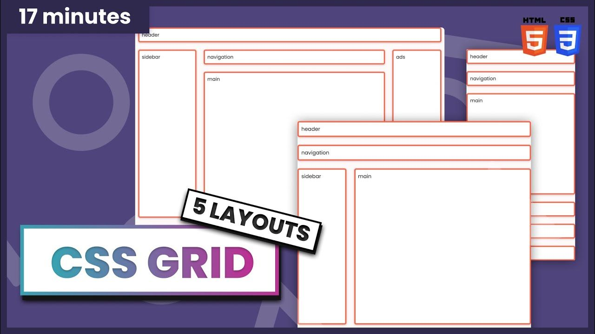
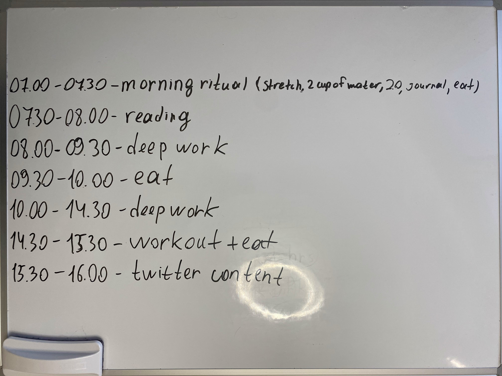

Welcome to eZcode- Blog
An Absurdly Basic Bug Let Anyone Grab All of Parler's Data
The social media platform Parler rose to prominence as an outlet for free speech. In practice, it became a haven for disinformation, hate speech, and calls for violence, the sort of content generally blocked on more mainstream platforms like Twitter and Facebook. It's fair to say, though, that by “free speech” the site's creators didn't mean that anyone could freely download every message, photo, and video posted to the site, including sensitive geolocation data. But a very basic bug in Parler's architecture nonetheless seems to have made it all too easy to do just that.
weiterlesenBest design 🎨 resources websites every developer 💻 should bookmark🔖
Are you looking for the best design resources websites? Well, then this collection is something every developer should bookmark, as it consists of the best resources that can help you to develop an amazing eye-catchy and visually enriched project. Here you'll find the best websites and resources with modern UI components in different formats such as PSD, Sketch, Figma, Icons, and Illustrations, etc. They are great for ideas for web components/UI.
weiterlesenBiggest Data Breaches of 2020 – and What Developers Should Learn From Them
2020 was not a good year for hacks, data breaches, and other cyber-attacks. As far as those things go, it was among the worst years on record. Businesses far and wide experienced some of the most damaging and embarrassing hacks imaginable last year. And some of the incidents led to serious security failures that could end up having grave international implications. But despite all of the problems, some of 2020's hacks can yield valuable lessons for programmers and software engineers to help them to harden their products against future attacks. To help them do that, here's a rundown of the biggest hacks of 2020 and what programmers can – and should – learn from them.
weiterlesenArtikel 4
Text
Learn CSS Grid by Building 5 Layouts in 17 minutes
CSS Grid is a tool you can use to help create layouts for your website. It's especially useful if you need to think about the position, layers, or sizes of different elements. CSS Grid is complicated and there are many things to learn. But the good news is that you don't need to know everything all at once. In this tutorial, we will build 5 different layouts (which are explained as five separate tasks below) with CSS Grid. At the end of the tutorial, you will be ready to use CSS Grid in your next projects.
weiterlesenHow to Stay Productive All Day – Coding and Scheduling Tips for Programmers
I've been coding wrong my whole life. I thought it was okay to just sit down at my desk, open my laptop, take a task from my to-do list, and code it until I felt tired. But in reality, this style of work always killed my productivity levels after 2-4 hours of coding. I felt so tired that I didn't want to do anything except different low energy tasks (like code review). Today I can code 8+ hours without feeling like crap after. What has changed? My approach to work. After 62+ self-development books, dozens of articles and studies about productivity, and my trials and errors, I have created a productivity system that helps me to code, write, create, and live at my maximum capabilities without procrastination, tiredness, and brain fog.
weiterlesenHow to Build a Solid To-Do App with React
In this tutorial you will learn how to create a basic Solid to-do app. But what is Solid – not to be confused with SOLID? Well, it's a set of conventions and tools used to build decentralized apps. So what do I mean by decentralized? Currently, all our data is centralized in a few web platforms: Facebook, Google, and others. This has various consequences for privacy that we're all aware of, but it also endangers the principle of universality of the web: the web must be accessible to everyone. Let me illustrate this with an example: if my German teacher decides to create a Facebook group to share class materials, I need to have a Facebook account to access it. Likewise, if the teacher decides to quit Facebook, she needs to move the students to another app along with the data.
weiterlesen